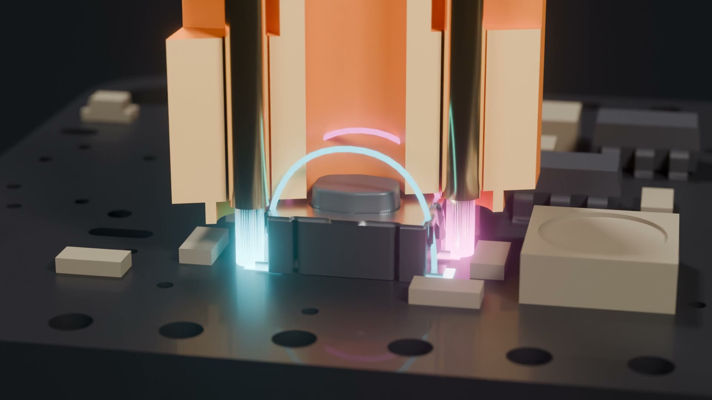
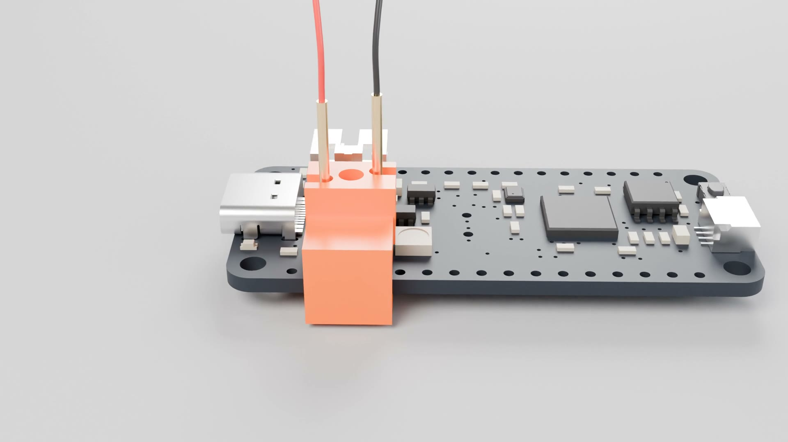
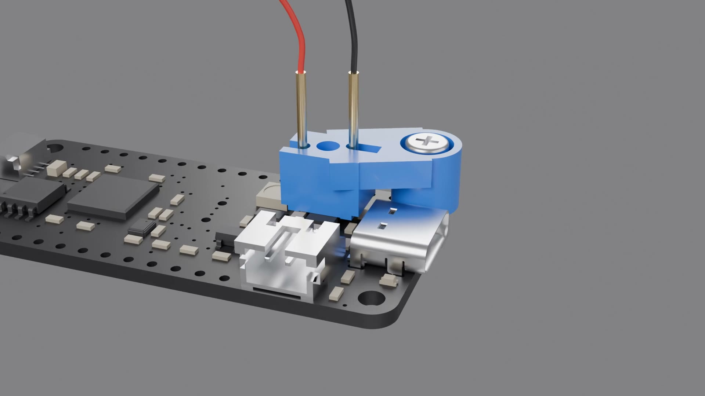

Digital Index Operator
Idea by Scott Shawcroft (@tannewt).
3D printed clips that hold two pogo pins on a board's RESET or BOOT button, so a test rig can press it with a relay.
George Jetson's job at Spacely Sprockets was digital index operator: he pressed one button all day. These clips do the same for hardware-in-the-loop testing.
How it works

- The clip registers on the switch body and holds two pogo pins on opposite corner pads. The two pads on each side of a tact switch are tied together inside, so diagonal corners are the two sides of the switch.
- A window over the plunger means the clip itself never presses the button.
- Print
bore_coupon.3mffirst and setbore_dto the hole that grips a pin snugly. Push the pins in from below.
Edge clamp

Hole mount

Files
- 3MF files ready to print, one per board button and one per switch type. Start with
3mf/fitted/and3mf/bore_coupon.3mf. - FreeCAD files (FreeCAD 1.1). Both designs are parametric: pick a board row or switch type in the
Paramssheet, or type your own edge distance or hole position, and the clip regenerates. Fit values such as bore size and clearance live there too.
Parts from Adafruit
| Part | Why |
|---|---|
| Pogo Pins "Needle Head" P75-B1 (2430) | The contact. 1.0 mm body, 0.7 mm tip, small enough to land on the pads of a 4.2 mm tact switch. Two per clip. |
| Pogo Pins "Crown Head" P75-H2 (2429) | Optional. Better grip on the larger 6 mm switch pads used on Metros. |
| M2.5 Nylon Screw and Stand-off Set (3299) | Hole mount on Feathers: M2.5 x 10 screw and nut. |
| M3 Nylon Screw and Stand-off Set (4685) | Hole mount on Metros: M3 x 10 screw and nut. |
| Silicone Cover Stranded Wire 30AWG (2051) | Solder to the pogo pin tails. |
| STEMMA Non-Latching Mini Relay (4409) | Closes the two wires to press the button from any microcontroller. |
| Pre-Cut Heat Shrink Pack (4559) | Insulate the solder joints. |
| Feather RP2040 (4884) | The board shown in the videos. |
Button reference
Distance from each button center to the nearest board edge and mounting hole, from the Adafruit Eagle files. "Row" is the board number in the FreeCAD Params sheet.
| Board | Button | Ref | Switch | Side | Nearest edge | Nearest hole | Row |
|---|---|---|---|---|---|---|---|
| Feather RP2040 rev D | RESET | SW1 | KMR2 | top | 6.41 mm (bottom) | 10.1 mm (M2.5) | 1 |
| Feather RP2040 rev D | BOOT | SW3 | RA_MINI | top | 1.65 mm (right) | 5.1 mm (M2.5) | 2 |
| ESP32-S3 TFT Feather Rev D | RESET | SW2 | RKB2 | bottom | 6.22 mm (bottom) | 7.5 mm (M2.5) | 3 |
| ESP32-S3 TFT Feather Rev D | BOOT | SW1 | RKB2 | bottom | 6.22 mm (bottom) | 11.8 mm (M2.5) | 4 |
| Adafruit Feather nRF52840 Rev E | RESET | SW1 | RKB2 | top | 6.22 mm (bottom) | 37.3 mm (M2.5) | 5 |
| Adafruit Feather nRF52840 Rev E | USER | SW2 | RKB2 | top | 6.17 mm (bottom) | 18.7 mm (M2.5) | 6 |
| Feather M4 AirLift rev A | RESET | SW1 | KMR2 | top | 6.54 mm (bottom) | 7.9 mm (M2.5) | 7 |
| ItsyBitsy M4 rev D | RESET | SW1 | RKB2 | top | 5.22 mm (right) | none | 8 |
| ItsyBitsy RP2040 rev C1 | RESET | SW2 | KMR2 | top | 4.95 mm (bottom) | none | 9 |
| ItsyBitsy RP2040 rev C1 | BOOT | SW3 | KMR2 | top | 4.95 mm (top) | none | 10 |
| QT Py RP2040 rev B | BOOT | SW2 | RKB2 | top | 5.16 mm (left) | none | 11 |
| QT Py RP2040 rev B | RESET | SW1 | RKB2 | top | 2.79 mm (bottom) | none | 12 |
| QT Py ESP32-S3 rev C | RESET | RESET | RKB2 | top | 6.10 mm (left) | none | 13 |
| QT Py ESP32-S3 rev C | BOOT | BOOT | RKB2 | top | 6.10 mm (left) | none | 14 |
| Metro ESP32-S3 rev B | RESET | SW3 | RA_METRO | top | 1.71 mm (top) | 14.0 mm (M3) | 15 |
| Metro ESP32-S3 rev B | BOOT | SW1 | RKB2 | top | 14.48 mm (right) | 26.2 mm (M3) | 16 |
| Metro M4 AirLift rev B1 | RESET | RESET | 6x6_SMT | top | 3.81 mm (top) | 9.0 mm (M3) | 17 |
| Metro Express rev H | RESET | RESET | 6x6_SMT | top | 3.94 mm (top) | 9.0 mm (M3) | 18 |
| Metro Amethyst rev D | RESET | SW2 | RA_METRO | top | 1.78 mm (left) | 13.9 mm (M3) | 19 |
| Metro Amethyst rev D | BOOT | SW3 | RA_METRO | top | 4.32 mm (right) | 7.8 mm (M3) | 20 |